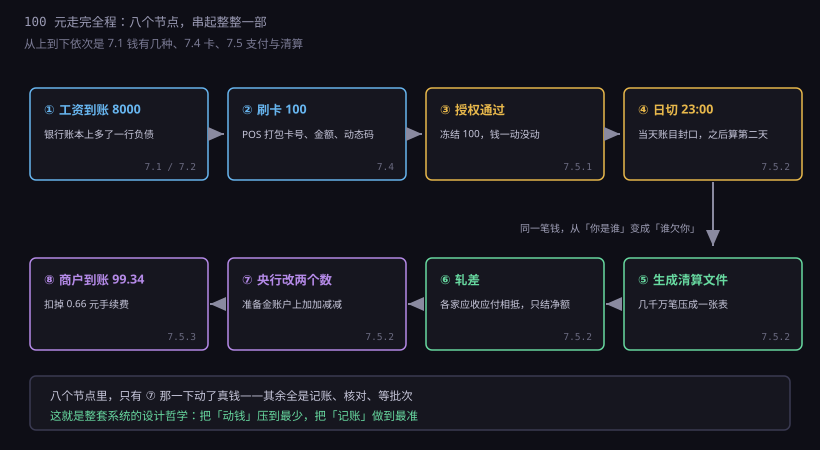
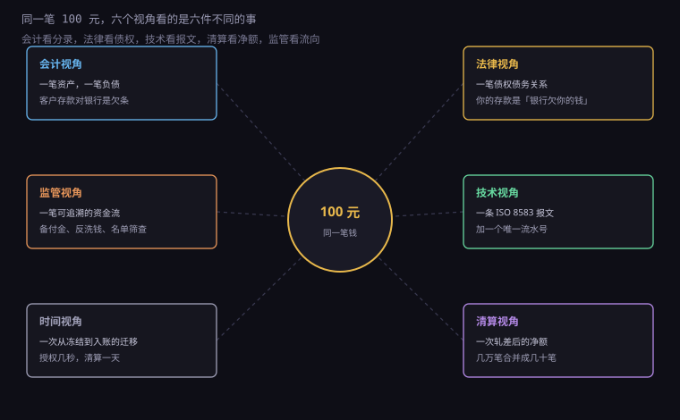
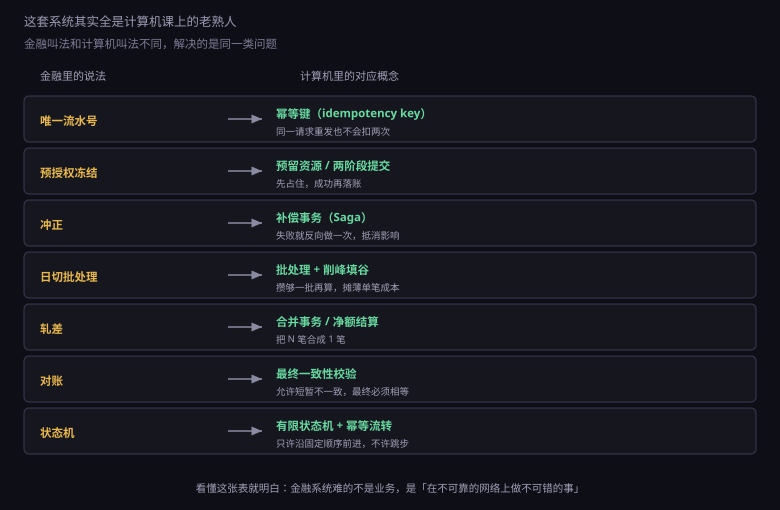

约 0.4 万字 · 3 张图 · 前面五章的所有零件，在这里拼成一台完整的机器
先划定一笔具体的钱：你工资 8000，花 100 买了双鞋。 这 100 元从进入你的账户，到进入商户的账户，中间经过八个节点。

① 工资到账。 公司从它的开户行把钱划到你的银行。你的手机上跳出一个数字：8000.00。 这个数字不是纸币，是银行账本上的一行记录—— 准确地说，是银行欠你 8000 元的凭据。（7.1、7.2）
② 刷卡 100。 POS 把你的卡号、金额、时间、商户号打包成一条报文， 芯片现场算一个动态验证码塞进去。（7.4）
③ 授权通过。 报文经过收单行、卡组织，到了你的发卡行。 银行查了四件事：卡还活着、余额够、密码对、风险不高。 然后回一个授权码。你的可用余额变成 7900，但商户一分钱也没收到。（7.5.1）
④ 日切 23:00。 当天所有交易被封口。这一刻之后的交易算第二天。（7.5.2）
⑤ 生成清算文件。 几千万笔交易被压缩、排序、校验，变成一份可以交付的清单。（7.5.2）
⑥ 轧差。 各家银行的应收应付相加相减，几万笔变成几十笔净额。（7.5.2）
⑦ 央行改两个数。 在中央银行的账本上，你的银行准备金减一笔，商户的银行准备金加一笔。 整个流程里，这是唯一一次真正"动钱"。（7.5.2）
⑧ 商户到账 99.34。 手续费 0.66 在中间被三家分掉：发卡行 0.45、卡组织 0.065、收单行 0.15 上下。（7.5.3）
从你刷卡到商户能用这笔钱，最快几小时，通常一天。 而你按下确认到听见"叮"，只用了一秒多。 这一秒和这一天的差距，就是授权与清算的差距。
回头看这八个节点，有一个事实特别值得记住： 七步都在记账、核对、等待，只有第 ⑦ 步动了真钱。
这就是整套系统的设计哲学：把"动钱"压到最少，把"记账"做到最准。
为什么？因为"动钱"是最贵、最慢、最危险的操作。
它贵，因为跨机构转账要占用真实的资金头寸，还要走央行的系统； 它慢，因为要等所有参与方对完账才能算净额； 它危险，因为一旦出错，钱就真的少了或者多了，不像改个数字那样能重来。
而"记账"可以无限次重来。授权失败了重发一次，清算文件错了重跑一遍， 对账不平就再对一遍——这些操作的成本几乎为零。
所以系统的策略是：在记账层面做尽可能多的校验和缓冲， 把真正的资金流动压缩到每天一次、每次几十笔。
这个思路你以后写程序也会反复用到： 把昂贵操作（写磁盘、发网络请求、扣库存）尽量往后放、尽量合并， 前面用便宜的检查挡住绝大多数无效请求。 银行只是把这个原则做到了极致—— 因为它的"昂贵操作"一次错就是几十亿。
同一笔 100 元，不同的人看到的东西完全不一样。 这不是角度问题，是他们真的在处理不同的对象。

会计视角：一笔资产、一笔负债。 你账上多 100，银行账上多一笔"欠你的钱"。 同一笔交易要在两边各记一次，而且总额必须相等——这就是复式记账。
法律视角：一笔债权债务关系。 你的存款在法律上不是"你放在银行保险柜里的钱"， 而是"银行欠你的钱"。所以银行破产时，你是债权人之一， 排在存款保险的赔付顺序里。
监管视角：一笔可追溯的资金流。 谁付的、付给谁、什么时间、什么用途，都要留痕。 大额和可疑交易要报告，名单上的人要被拦。
技术视角：一条报文加一个唯一流水号。 报文负责说清楚"谁给谁多少钱"，流水号负责保证"只说一次"。
时间视角：一次状态的迁移。 从"可用"到"冻结"，从"冻结"到"已清算"， 每一步都有时间戳，每一步都可能卡住。
清算视角：一个净额。 你这 100 元在清算所眼里不是 100，而是"某银行应付某银行的一个零头"， 跟另外几百万笔混在一起，最后只剩一个数字。
这六个视角不是修辞。它们各自对应一套真实的系统、 一群真实的人、一份真实的报表。 你在手机上看到的那一个数字，是这六套系统同时成立的结果。
整套系统看起来规则多得数不清，但真正的铁律只有三条。 其余的规则都是这三条的推论。
第一条：账要平。 任何一笔交易，两边必须同时记，且总额相等。 你的账户减 100，商户的账户加 100（扣手续费前）， 银行的负债一增一减，资产也一增一减。 如果哪天真对不上，系统会停下来查，而不是"先记上以后再说"。
这条铁律的代价是慢。收益是：钱不会凭空产生，也不会凭空消失。 所有的差错都能被定位到具体某一笔，因为不平的差额一定有来源。
第二条：钱不能被花两次。 这就是所谓的"双花"问题。 你账上 100，同时发起两笔 100 的支付，只能成功一笔。
系统靠三样东西防住它： 唯一流水号（同一笔只处理一次）、 状态机（一笔交易只能沿固定顺序前进）、 以及先扣后加（先在付款方锁定，再去收款方入账）。
第三条：出错要能追。 每一笔操作都要留痕，能查到是谁、什么时候、改了什么。 出了错要能冲正、能对账、能找到责任人。
这条铁律是前两条的保险。因为再严密的系统也会出错， 而金融系统的容错方式不是"不出错"，是"出错之后一定能查清、一定能补上"。
三条铁律合在一起，解释了这套系统所有的"繁琐"： 为什么要授权又要清算（账要平，得两边都确认）、 为什么要流水号（防双花）、 为什么要对账（出错要能追）。
如果你学过一点分布式系统，会发现这里面的每个机制都似曾相识。

最典型的是幂等。 同一个请求发两次，结果应该和发一次一样。 金融系统的做法是给每笔交易一个唯一流水号， 收款方收到重复的号就丢弃。 你在网上支付时如果看到"请勿重复提交"， 背后就是这套东西在防。
然后是补偿事务。 分布式系统里没有真正的"回滚"，只有"反向操作"。 钱扣错了，不能像数据库那样 rollback， 只能再发一笔相反的交易把影响抵消——这就是冲正。
还有最终一致性。 授权那一刻，你的余额和商户的余额是不一致的（你少了，他没多）。 系统允许这种短暂的不一致存在，但保证在一定时间后必须相等。 这个"一定时间"就是清算周期。
以及批处理和削峰。 白天攒着，夜里集中算，把一天几千万次的写入压成一次。 这跟消息队列攒批入库是同一个思路。
所以学计算机的人看金融系统，会有一种奇怪的熟悉感： 它用的全是你课本上的东西，只是换了一套名字， 而且用得比你作业里严格一万倍。
反过来也成立：如果你想真正理解分布式系统的难点， 去看支付系统比看论文有用。 因为它是少数几个"不允许丢数据、不允许重复、不允许不一致"的真实场景， 而且每天都在跑几亿次。
每次有人抱怨"转账要等、退款要三天"，我都会想到一个问题： 如果让你来设计，你敢让它多快？
快意味着少等一轮确认。少等一轮确认，意味着出错时你没法回头。
举一个具体的取舍：跨行转账能不能做到"对方账户立刻加钱"？ 技术上完全可以——网络延迟只有几十毫秒。 但银行不做，因为它要先确认"付款方这笔钱是真的扣成功了"。 这个确认需要一次往返，往返就要时间， 而这时间在高峰期会被拉长到几分钟。
如果跳过确认直接加钱，会怎样？ 网络抖动时，付款方可能扣了两次，或者没扣成功但收款方加了钱。 前者的用户会投诉，后者的银行要自己赔。 一次这样的事故，损失可能超过这套系统一年的服务器成本。
所以慢不是技术落后，是把确定性放在了速度前面。 这个选择在支付领域几乎总是对的， 因为支付的价值不在于快，而在于"这笔钱到底到没到"这件事永远有确定答案。
这也解释了一个反常识的现象： 越是金额大的场景，系统越慢、越保守。 你买瓶水秒付，买房要等好几天。 不是银行对大客户不上心，是金额越大，容错空间越小。
这套系统很结实，但并非无懈可击。它有三个真正的软肋。
第一，挤兑。 银行的钱大部分贷出去了，账上只留一小部分备付。 如果所有人同时来取钱，它拿不出来。 这不是经营不善，是"期限错配"这个模式的固有特征—— 短存长贷，本来就是靠信心维持的。
对付挤兑的办法有两个：存款保险（中国上限 50 万， 同一家银行同一存款人本息合计）和央行最后贷款人。 前者保小额，后者保系统。这两样东西的存在， 让"去银行挤兑"这件事从理性行为变成了不理性行为。
第二，单点故障。 卡组织、清算所、网联，都是全网的中枢。 它们一停，全国的支付就瘫。 所以这些机构的数据中心必须是多地多活， 而且要有"降级方案"——比如断网时允许小额离线交易 （代价是风险转移到商户身上）。
第三，信任崩塌。 这是最抽象也最致命的一条。 整套系统的运转，建立在"大家都相信这些数字是真的"之上。 一旦这种信任破裂（比如某家银行被证实挪用客户资金）， 再多的技术手段也救不回来。
所以你会发现，金融监管的重点从来不是"技术先不先进"， 而是"信息披露够不够、备付金够不够、审计做不做"。 技术在防范的是操作风险，制度在防范的是信任风险。
最后收一下，把这一部里最有用的东西压缩成六句。
一、你账户里的钱是银行的负债，不是你的实物。 所以银行破产时你是债权人，所以有存款保险，所以大额存款要分散。
二、可用余额和账户余额不是一回事。 冻结、预授权、在途，都会让这两个数字分叉。 看到"明明有钱却刷不出来"，先看可用余额。
三、刷卡那一秒钱没动，动的是额度。 真正划款在夜里。所以退款慢、拒付更慢，这是设计，不是态度。
四、转错账基本追不回来，先转 1 元试一下。 银行没有权力动别人的存款，法院流程要走几个月。 预防的成本是一块钱，事后追回的成本是几个月。
五、付款码等于现金，不要截图、不要发人。 它是一次性令牌，60 秒内谁拿到谁能花。
六、所有"免费"的支付服务，成本都在别处。 免手续费可能意味着更低的存款利率， 高返现可能意味着商户付了更高的交换费， 而商户会把成本加进商品价格——最后还是你在付。
这六句话不是知识，是判断力。 下次看到"零费率""秒到账""扫码立减"的时候， 你会知道该往哪儿多看一眼。